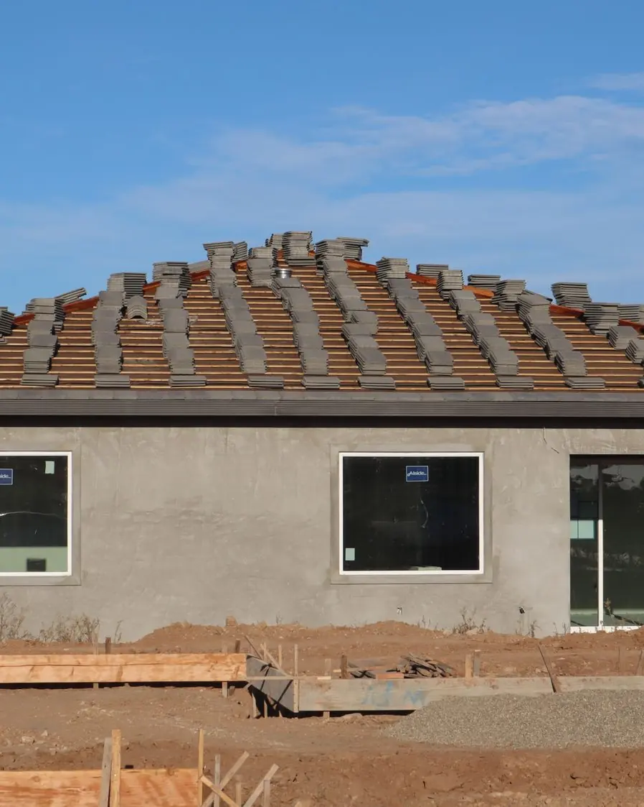
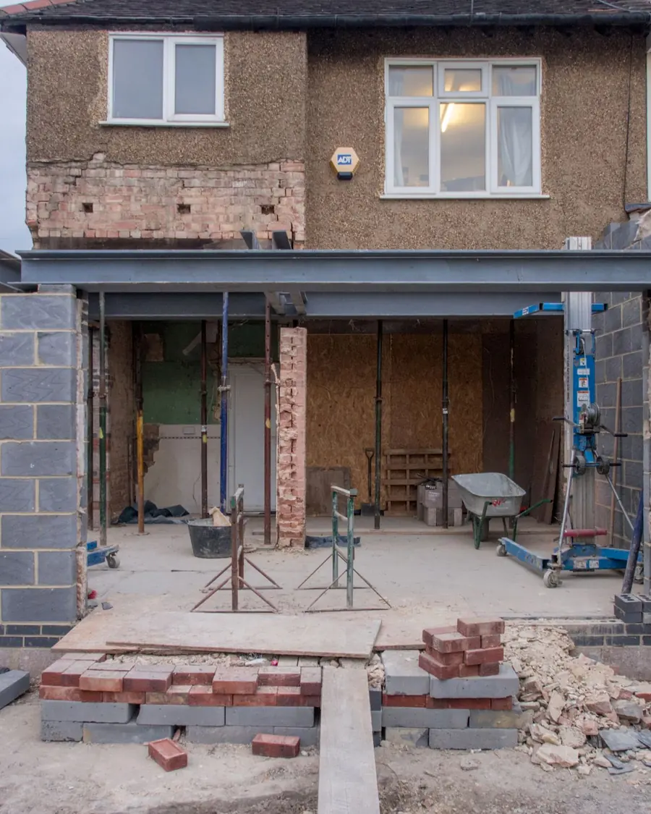
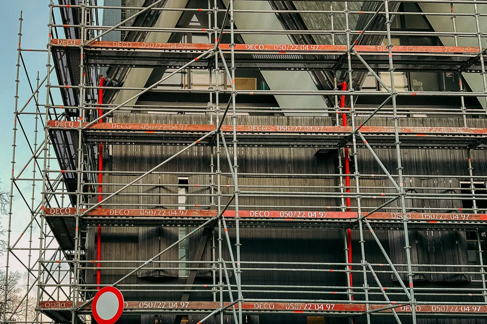

Услуги
Реконструкция и перестройка
Перестраиваем и расширяем существующие здания: пристройки, новые проёмы, перекрытия и крыши. Перед работами оцениваем состояние конструкций.

Реконструкция начинается с обследования здания. Оцениваем стены, перекрытия и крышу и обсуждаем, что нужно перестроить, а что можно сохранить.
Делаем пристройки, новые проёмы, замену перекрытий и крыш. Если для перестройки нужен проект и согласование со стройуправлением, обсуждаем это ещё до сметы.
Что входит
- Обследование здания
- Пристройки и расширение
- Новые проёмы в несущих стенах
- Замена и усиление перекрытий
- Перестройка крыши
- Обновление фасада


Ход работ
Как это происходит
- 01
Обследование
Оцениваем конструкции и возможности.
- 02
Проект и смета
Договариваемся о работах, цене и порядке.
- 03
Перестройка
Работаем этапами по согласованному графику.
- 04
Сдача
Вместе проверяем результат.
Вопросы
Часто спрашивают
Нужен ли проект для перестройки?
Часто нужен, особенно если меняются несущие конструкции или объём здания. Требования уточняют в стройуправлении, а мы поможем понять, с чего начать.
Можно перестраивать дом, в котором живёшь?
Часть работ можно. Порядок работ планируем так, чтобы жилые помещения затрагивать как можно меньше.
С чего начать?
С осмотра. Пришлите фото и план здания или напишите, что хотите изменить.
Другие услуги


Расскажите о своём объекте
Напишите, что нужно построить, где и когда. Ответим и договоримся о следующем шаге.